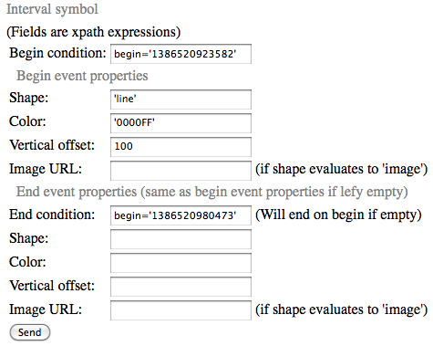

Figure 1: Abstract-Lite client interface
| You are here : Abstract Lite » User Guide |
Abstract-Lite offers an interactive interface to visualize your agents' activity traces. Abstract-Lite is a simpler version of ABSTRACT that does not use ontologies nor SPARQL queries. Instead, Abstract-Lite uses XPATH instructions and XSL stylesheets to help you customize your visualizations. Abstract-Lite can display the traces generated by your agents in real time.
Section 1 (Overview) introduces Abstract-Lite's general features. Section 2 (Customize the trace visualization) explains how to interactively customize the visualization through the customization panels. It requires background knowledge of XPATH.
Page 2 presents Abstract-Lite's advanced features. On this page, Section 3 (Customization with XSL Stylesheets) introduces the usage of XSL stylesheets. It requires background knowledge of XML and XSL. Section 4 (Generate the trace in real time) explains how to implement the tracing functions in a Java agent.
Abstract-Lite has a client/server architecture. You can either install your own Abstract-Lite server by following the installation procedure, or use our Abstract-Lite Server hosted by the Liris Lab. It has been successfully tested with recent versions of Firefox and Chrome, but does not yet support other browsers.
Open the Abstract-Lite home page with Firefox or Chrome.
Click Register to create a new user.
Log in with the user you have created.
You obtain the page in Figure 1.
Figure 1: Abstract-Lite client interface
1. The Menu Panel (top) provides administrative commands.
2. The Trace List Panel (right) lets you select a trace from the list. The trace list is initialized with a demo trace when your account is created. The trace list is further populated when you upload new traces as xml files, or when your agent sends new traces via http (the "real time" feature).
3. The Customization Panel (central column) lets you manage your different customizations that specify how your traces are visualized. A customization is a set of visualization rules. In this panel, the Save customization as form lets you name your customizations and save them. The Customization List (empty here) lets you reload a customization.
4. The Visualization Rules Panel (column on the left) lets you define your visualization rules. A visualization rule is a rule that defines a graphical symbol to represent an aspect of an event. In this panel, the Instantaneous Symbol form and the Interval Symbol form let you create new visualization rules as explained in Section 2.
Click the demo-s trace in the trace list. This makes the player appear. In the player, click the Play button to start playing the trace. The trace is displayed as shown in Figure 2.
Figure 2: The trace player
Click the Pause button to stop playing the trace.
Click the plus and minus buttons to zoom in and out over the horizontal axis.
Click the P button to open a printable copy of the trace in a new window. Use your browser's print function to print the trace from this new window.
You can drag the trace to the left or to the right with your mouse by clicking/dragging within the player area.
You can click on a symbol to display the data attached to the event related to this symbol. The attached data appears in a new box just below the player. This box is called the Event Data box.
You define the visualization rules through the Instantaneous Symbol form or the Interval Symbol form in the visualization rule panel. Note that you can only access these forms while the trace is playing, and the changes take effect immediatly during playing. Each of the input fields in these forms takes an XPATH expression. Abstract-Lite interprets the XPATH expressions in the context of each event in the trace. Each event contains an XML tree that you can freely define when generating the trace. Please have a look at the XML structure of our demo trace by downloading the demo trace (using the downward arrow next to the identifier of the trace in the trace list).
Abstract-Lite applies the visualization rules to each event and interprets the result to generate graphical symbols in the player. The field Condition determines whether the symbol is drawn or not.
On creation, your account was initialized with the three visualization rules shown in Figure 3.

Figure 3: The visualization rules
Click ⎘ (next to the rule identifier) to copy the fields of a specific rule to the symbol form. This feature is used to edit a rule. To modify a rule, just edit it, modify it, save the new version, and delete the previous version from the list.
Click ✗ to delete a rule.
A new rule is saved and added to the list when you click on the Send button in the symbol form. The player is also updated to reflect the new set of rules.
In our demo trace, the events contain a field named primitive_enacted_schema. This field indicates the action that the agent has just done ('^': turn left, 'v': turn right, '>': move forward). The first demo rule is responsible for drawing a green triangle pointing upward for each turn left event:
Figure 4: Editing the visualization rule of an instantaneous symbol.
This rule specifies that the symbol 'square' should be drawn for each event whose type field is equal to the string 'OpenChannel'. This symbol should be drawn in green ('00FF00') and located 80 pixels below the center of the player.
Note that despite the term instantaneous, instantaneous symbols have a width that can be used to represent the event's duration (provided that the event's duration was recorded in your trace). To do so, customize the X scale field with an expression that evaluates as the event's duration using the information available in your trace.
An interval symbol is a symbol (e.g., a line) that represents the interval between a begin event and an end event.
The Interval Symbol form works similarly to the Instantaneous Symbol form. For example, the third rule draws the lines that represent the interval from an event whose property 'begin' equals '1386520923582'. to an event whose property 'begin' equals '1386520980573'.

Figure 7: Editing the visualization rule of an interval symbol.
All the fields accept XPath expressions, meaning that you can specify complex computations based on the properties of your events. To facilitate the specification of the visualization rules, we have defined the additional function my:ifthenelse.
my:ifthenelse(<condition>, <value if true>, <value if false>)
If the first parameter is true, this function returns the value of the second parameter. If the first parameter is false, this function returns the value of the third parameter.
Note that you can specify that an interval symbol will change its appearance depending on its ending condition. This is useful when the trace is displayed in real time. For example, an interval symbol can be displayed in a blue color as long as it is not yet ended, and turn red or green depending on how it ends.
You can upload your traces through the Upload trace function in the Trace list.
Your trace file should have the tags <trace id="string">, <slice date = "integer">, <event date="integer">, and <type>. The events with the same date should be grouped within the same tag <slice>. Table 1 gives a minimal example file, which can be downloaded from here for test.
Table 1: Example trace file.
<trace id="minimal"> <slice date = "1"> <event date="1"> <type>foo1</type> </event> <event date="1"> <type>foo2</type> </event> </slice> <slice date = "2"> <event date="2"> <type>foo1</type> </event> </slice> </trace>
Please visit Page 2 for Abstract-Lite advanced features.
To cite Abstract and Abstract-Lite, please use this reference:
Olivier L. Georgeon, Alain Mille, Thierry Bellet, Benoit Mathern, and Frank E. Ritter (2012). Supporting Activity Modeling from Activity Traces. Expert Systems 29(3), 261-275. doi:10.1111/j.1468-0394.2011.00584.x.
To cite the usage of Abstract-Lite for autonomous-agent behavioral analysis, please use this reference:
Olivier L. Georgeon and James B. Marshall 2013. Demonstrating sensemaking emergence in artificial agents: A method and an example. International Journal of Machine Consciousness, 5(2), 131-144. doi:10.1142/S1793843013500029.
Abstract-Lite was developed by Pierre-Yves Ronot at the Liris lab in Lyon (France), as part of the ABSTRACT project and of the IDEAL project.
For any question, comment, feedback, congratulation message, or proposition of collaboration, please contact Pierre-Yves Ronot and Olivier Georgeon.